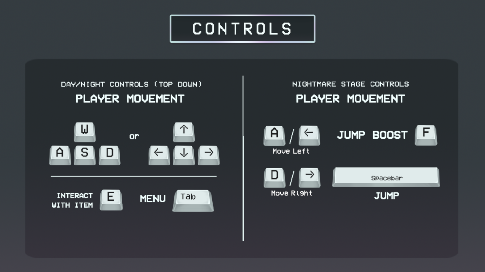
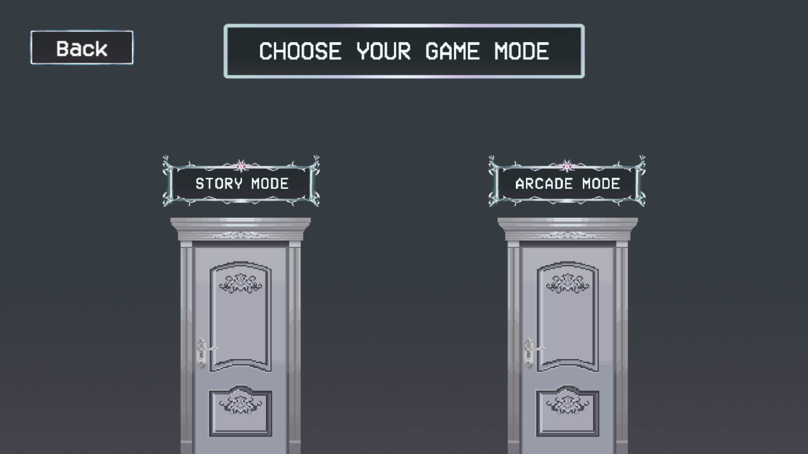
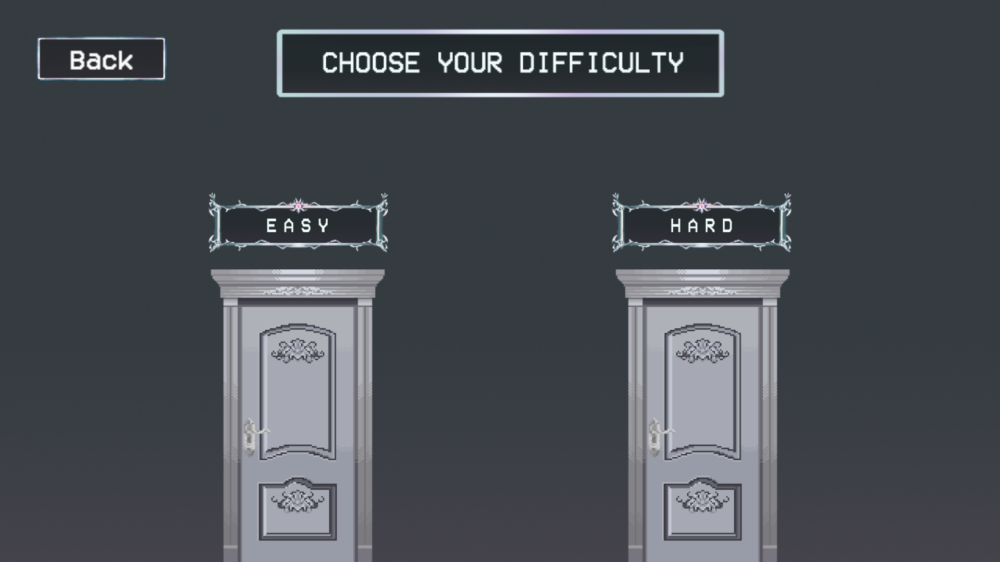
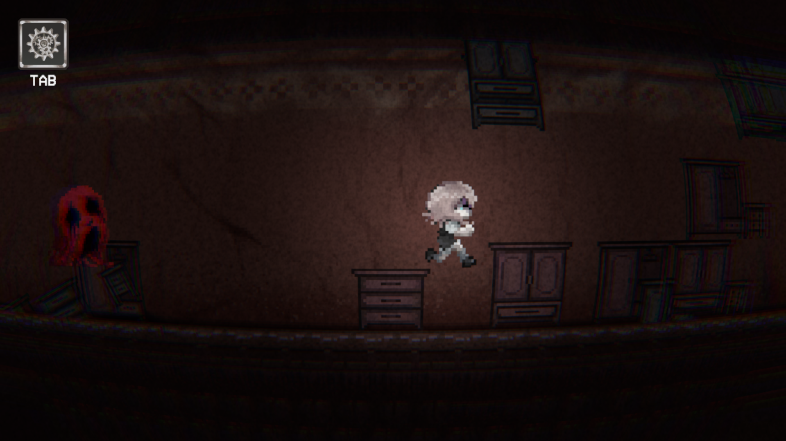

Table of Contents
Game Overview
Leaving is the easy part. Remembering is the nightmare.
Memoir is a psychological horror mystery game where the player plays as Rikka. The apartment darkens with an unavoidable truth, Rikka must confront the disturbing reflections of her trauma and unravel the mystery of her collapsing reality before she can move forward.
The story follows Rikka as she unravels a concealed past while her surrounding reality begins to decay. The cozy apartment she inhabits is eventually revealed to be a hallucination, masking a reality that is actually old and ragged. Each night, her dreams transform into nightmares where she is hunted by a grotesque manifestation of her guilt and trauma known as The Entity. The story reaches its climax as Rikka must escape this creature to obtain key items, which serve as the only way to recover her forgotten memories.
Plot
The story follows Rikka as she unravels a concealed past while her surrounding reality begins to decay. The cozy apartment she inhabits is eventually revealed to be a hallucination, masking a reality that is actually old and ragged. Each night, her dreams transform into nightmares where she is hunted by a grotesque manifestation of her guilt and trauma known as The Entity. The story reaches its climax as Rikka must escape this creature to obtain trigger items, which serve as the only way to recover her forgotten memories.
Gameplay


The experience of Memoir is divided into two contrasting loops that represent Rikka's struggle between her physical reality and her fractured psyche.
Day Phase: Players explore Rikka's apartment with the objective of packing her belongings. Finding specific "key items" progresses the story and transitions the game to the night phase.
Night Phase: The gameplay shifts to a side-scrolling nightmare where Rikka must run away from and eventually defeat the Entity.
The Recovery: Memory Fragments Surviving the nightmare is the only way to progress. Upon overcoming the terror, Rikka moves closer to the truth.
The game can be played on Story Mode or Arcade Mode.
Story Mode: In this mode, players follow the narrative-driven experience, uncovering the story of Rikka and her journey through the apartment and the nightmarish sequences.
Arcade Mode: In this mode, players can replay the nightmarish sequences without the narrative context, focusing solely on the gameplay mechanics and challenges presented by the Entity.
In arcade mode, players can choose between Easy Level or Hard Level. Easy level consists of the three nightmarish sequences, while Hard level features more challenging iterations of a similar scenario.


Developers
Developed by Ratical Studio using Unity, Github Desktop, Aseprite, Resprite, Adobe Photoshop, Adobe Premiere Pro, and Clip Studio Paint.
Member Roles:
Karen Kate Bansale - Lead Developer & Project Manager
Elyanna Kirsten Castillo - Character and Environment Design
Asi Sheikh D. Cruz - Asst. Developer & Sound Design
Jovelisa Malabanan - Asset Design
Edrian Trinidad - Splash Artist & UI Design